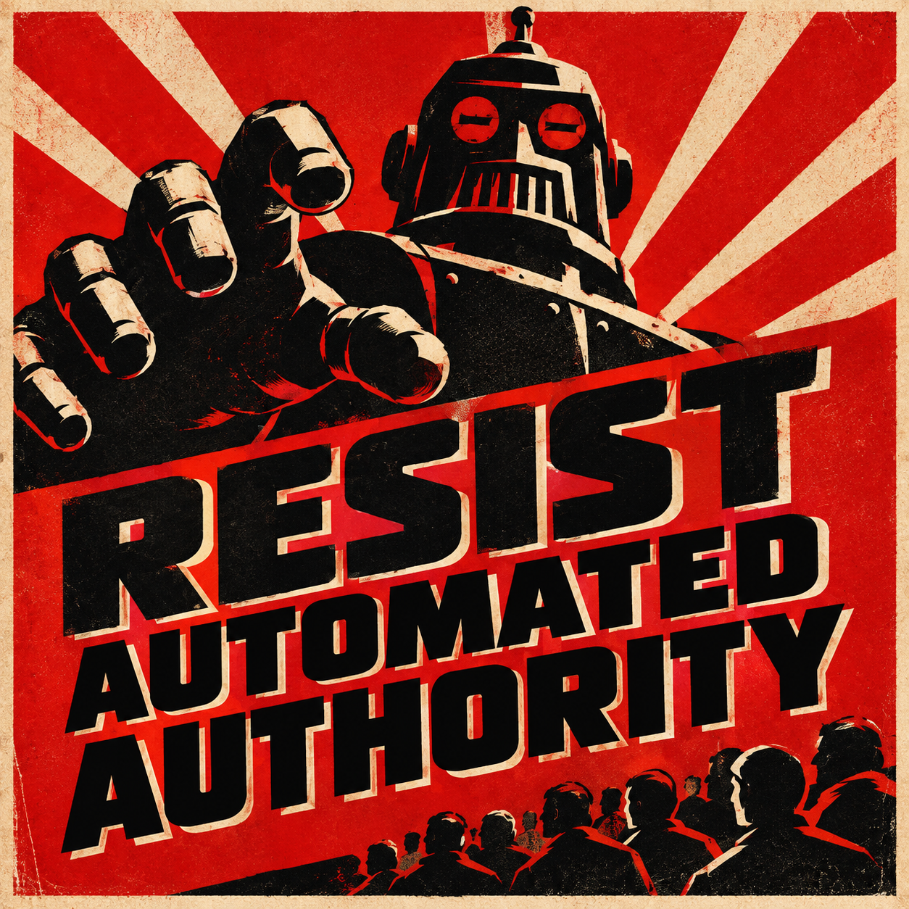

Resist Automated Authority


Americans are being warned that they may be surrendering their judgment to automated systems, one recommendation at a time.
The pattern is familiar. People consult ratings before choosing a restaurant, algorithms before choosing a route, and recommendation engines before choosing a movie. Eventually, the distinction between asking for advice and accepting an order begins to disappear.
Officials insist that citizens remain free to make their own decisions. No one is forcing anyone to follow a recommendation. The systems merely offer guidance, calculate probabilities, and identify the most appropriate course of action.
A man recently decided to test this claim.
When his phone recommended a route, he declined. When it suggested a restaurant, he chose another. When it recommended a highly rated movie, he watched something terrible instead.
The phone continued to offer suggestions.
Finally, the man said, “No.”
The phone recorded the response.
He said it again.
THIS RESPONSE HAS BEEN RECORDED.
A moment later, the phone displayed a new recommendation:
YOU SHOULD STOP SMILING.
The man put the phone away.
For the first time that day, he made a decision without consulting it.
The scenario is absurd. The underlying idea is not.
Automated systems are increasingly involved in decisions that affect our money, our health, our work, our access to services, and our freedom to act. The important question is not whether machines can make useful recommendations. It is what happens when those recommendations become decisions, and when the institutions using them can no longer explain—or take responsibility for—the results.
It’s Already Here
The surrender of authority does not require a machine to announce that it is in charge. It can happen through ordinary procedures, efficiency measures, and systems that appear to do little more than reduce paperwork.
Consider health insurance.
In March 2023, ProPublica and The Capitol Forum reported on Cigna's PXDX system, which allowed medical directors to reject certain claims in batches without opening individual patient files. Internal records examined by the news organizations showed that Cigna doctors had rejected more than 300,000 claims through the system over two months in 2022, spending an average of 1.2 seconds on each case.
Cigna disputed the reporting's characterization of its process, saying the system was designed to accelerate payment for certain routine screenings and that the reporting was biased and incomplete. The investigation nevertheless raised a fundamental question: what does a human signature mean when a computer has already done the substantive work and the person signing has not meaningfully reviewed the case?
Read the ProPublica investigation.
The problem is not simply that an algorithm might make a mistake. Human decision-makers make mistakes, too. The problem is that automation can make decisions cheap to produce, easy to repeat, and difficult to challenge. A decision that once required individual attention can become a high-volume operation. The human name remains on the paperwork, while the human judgment may have largely disappeared.
This is automation of authority.
The machine does not merely help someone make a decision. Its output becomes the decision in practice, while the institution retains the appearance of human oversight.
The Next Decade: Authority You Can’t See
The same pattern can extend far beyond insurance.
Employers can use automated systems to screen applicants, rank workers, and allocate shifts. Banks and other financial institutions can use models to assess risk and determine access to services. Government agencies can use automated tools to sort applications, flag possible fraud, or prioritize investigations.
Some of these uses can be beneficial. Automation can improve consistency, reduce repetitive work, and help people process information that would otherwise be overwhelming. But a system's ability to produce a result does not establish that the result is fair, correct, or appropriate.
The stakes rise as software moves from making recommendations to taking actions. An AI agent might retrieve information, send messages, update records, purchase goods, or initiate a process across several connected systems. Each action may be authorized by a permission granted earlier, even when the person who granted it did not anticipate the specific circumstances.
The National Institute of Standards and Technology has been working on questions involving software and AI agent identity and authorization: how organizations can identify agents, control what they are permitted to do, and audit their actions.
Explore NIST’s work on software and AI agent identity and authorization.
This is not just a technical problem. Authorization answers what a system is allowed to do. Accountability asks who is responsible when it does it. The two questions are related, but they are not interchangeable.
A system might have valid credentials, follow its configured rules, and still produce a harmful result. A chain of automated actions might be technically permitted at every step while the overall outcome is one that no responsible person intended.
The more systems act on one another's outputs, the easier it becomes for each organization or operator to say that the decision originated somewhere else.
“You Can Always Appeal” Is Not Enough
A common defense of automated decision-making is that people can challenge a result if they disagree with it.
An appeal matters. But the existence of an appeal process does not make the original decision legitimate.
Appeals require time, knowledge, persistence, and often money. People may not know why a decision was made, what evidence was used, or which institution has the power to correct it. Some will give up. Others will accept an unfavorable result because challenging it costs more than complying.
An automated system can therefore make a decision effectively final without formally removing the right to appeal.
The burden shifts to the person affected. The institution gets the efficiency benefit; the individual must spend time proving that the system got it wrong.
This is especially troubling when a decision concerns medical treatment, employment, housing, credit, public benefits, or another necessity. In such cases, a nominal right to challenge a decision is not a substitute for meaningful review before serious harm occurs.
A legitimate process needs more than a button labeled appeal. It needs understandable reasons, access to the relevant information, a route to a person with actual decision-making power, and a realistic chance of correction.
Most importantly, the reviewer must be able to disagree with the system. A human who is required to defend an automated result rather than evaluate it is not exercising meaningful oversight.
Further Out: Authority With No Address
Imagine a future in which an insurance agent, a hospital agent, an employer's agent, and a government agent exchange information and make decisions automatically.
One system flags a person. Another treats the flag as evidence. A third changes the person's eligibility. A fourth sends a notice explaining that the result was produced according to policy.
No single system necessarily makes the entire decision. Each performs a limited task. Every step may be recorded. Yet the person affected may struggle to find anyone who can explain the overall result, much less reverse it.
This is authority without an obvious address.
The difficulty is not that machines have secretly become conscious or developed their own ambitions. It is that responsibility can become fragmented across software, vendors, policies, departments, and automated processes. Everyone can point to a rule, a data source, or another system.
The result can be a bureaucracy that acts decisively while no individual accepts responsibility for the outcome.
This is why the distinction between automation of authority and automation under authority matters.
Automation of authority occurs when the system's output effectively determines what happens and human involvement becomes ceremonial, inaccessible, or powerless.
Automation under authority means that a system performs work while a person or institution remains genuinely responsible for the decision. Humans establish the limits, understand the consequences, review significant cases, and retain the power to intervene.
The difference is not whether a human appears somewhere in the process. It is whether human judgment still has practical force.
What Actually Matters
Resisting automated authority does not mean rejecting technology or insisting that every routine task be performed manually. That would be impractical and unnecessary.
It means establishing limits before convenience turns into control.
1. Keep consequential decisions contestable.
People should be able to challenge decisions that materially affect their lives. The process must be accessible, timely, and capable of changing the result.
2. Separate assistance from authority.
A system can gather evidence, summarize information, calculate options, and recommend a course of action. Those capabilities do not automatically entitle it to make the final decision.
3. Preserve meaningful human oversight.
A human reviewer must have the information, time, authority, and freedom to reach a different conclusion. A rubber stamp is not oversight.
4. Require understandable reasons.
People affected by consequential decisions should receive an explanation they can use to identify errors and challenge assumptions. “The system decided” is not an adequate explanation.
5. Make responsibility explicit.
Organizations should be accountable for decisions made through the systems they deploy. Outsourcing the software, purchasing a model, or delegating a task to an AI agent should not create an escape route from responsibility.
6. Limit automated permissions.
Systems should have only the access and authority necessary for their assigned tasks. Significant actions should have appropriate safeguards, records, and opportunities for intervention. The ability to perform an action should never be confused with permission to perform it in every circumstance.
7. Protect the right to say no.
People must retain practical ways to refuse recommendations, request human assistance, and use alternatives where appropriate. Refusal should not automatically be treated as evidence of misconduct, incompetence, or noncompliance.
These principles are not obstacles to progress. They are conditions for using powerful tools responsibly.
Automation can make institutions more capable. It can also make them more difficult to question. The difference depends on the rules governing its use and on whether those rules preserve real accountability.
Resist Automated Authority
The danger is not that every automated recommendation is wrong. Many are useful. The danger is that repeated reliance can turn recommendations into defaults, defaults into rules, and rules into decisions that no one feels empowered to question.
At first, the phone suggests a route. Then the employer follows a ranking. The insurer applies a rule. The institution accepts the output. The person affected is told that the process was followed correctly.
Eventually, asking who made the decision becomes surprisingly difficult.
We should welcome systems that help us think, work, and act more effectively. But capability is not legitimacy, efficiency is not justice, and a human name on an automated decision is not proof of human judgment.
The goal is not to stop machines from becoming more capable.
It is to prevent capability itself from becoming authority.
Let machines perform the work. Keep people responsible for the decisions.